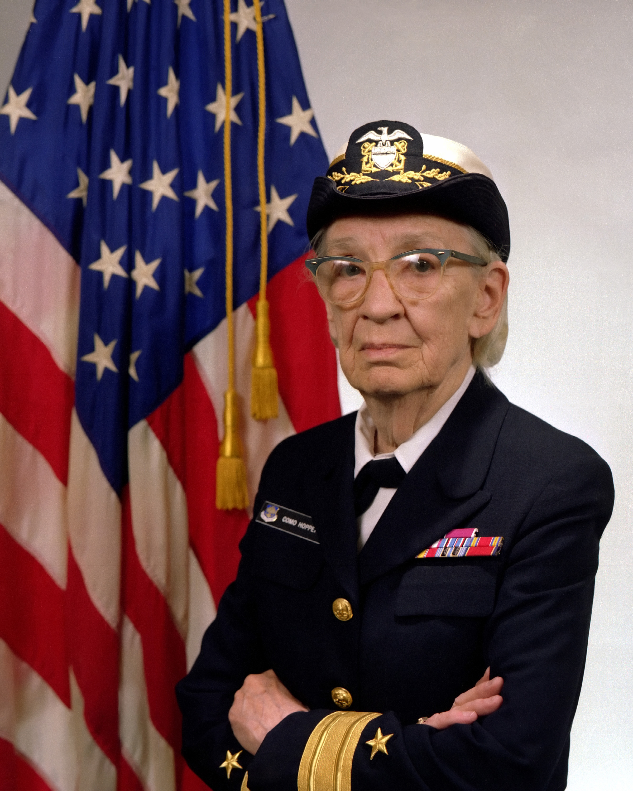

En bref
Née : 9 décembre 1906, New York
Décédée : 1er janvier 1992, à 85 ans
Grade : contre-amiral de l'US Navy
Domaine : mathématiques, programmation
Grace Hopper
1906-1992 - L'inventrice du compilateur
Présentation
Grace Hopper est une mathématicienne et informaticienne américaine, officière de la marine des États-Unis. Elle fut l'une des premières programmeuses du Harvard Mark I et a imaginé le compilateur, un programme qui traduit un langage proche de l'humain en instructions pour la machine. Elle a aussi contribué à la naissance du langage COBOL.
1. Enfance et jeunesse
Née Grace Murray à New York, elle est l'aînée de trois enfants. Ses parents veulent pour elle et sa sœur une éducation aussi bonne que celle de leur frère. À sept ans, elle démonte le réveil de la maison pour comprendre comment il fonctionne.
Elle étudie à Vassar College (licence en 1928), puis à Yale, où elle obtient un master en 1930 et un doctorat de mathématiques en 1934. Elle se marie en 1930 avec Vincent Hopper (divorce en 1945) et enseigne les mathématiques à Vassar de 1931 à 1943.
2. Débuts dans l'informatique
Après l'attaque de Pearl Harbor, Grace veut s'engager dans la marine. On la juge d'abord trop âgée, mais elle rejoint finalement la réserve navale en 1943. Sortie première de sa promotion, elle devient lieutenant en 1944.
Elle est affectée au laboratoire de calcul de Harvard, où elle est la troisième personne à programmer le Harvard Mark I, dirigé par Howard Aiken. Son premier travail : calculer les coefficients d'une série. Elle écrit aussi le manuel d'utilisation de la machine, puis travaille sur les Mark II et III.
3. Ses grandes réalisations
En 1949, elle rejoint la société Eckert-Mauchly et participe à la création de l'UNIVAC I, premier ordinateur électronique commercial. Elle y développe les outils de programmation automatique.
Le compilateur
Dès 1952, son programme pour le système A-0 traduit un langage lisible en code machine.
Le COBOL
Elle contribue à ce langage pour les entreprises, adopté sur de nombreuses machines.
Un manuel
Le premier manuel d'utilisation d'un ordinateur, pour le Mark I.
Elle plaide pour des langages plus proches de l'anglais, afin que la programmation devienne accessible à davantage de personnes.
4. Dates clés
1906 : Naissance à New York.
1934 : Doctorat de mathématiques à Yale.
1943 : Entrée dans la réserve navale.
1944 : Travaille sur le Harvard Mark I.
1949 : Rejoint Eckert-Mauchly (UNIVAC I).
1952 : Premier compilateur pour le système A-0.
1992 : Décès le 1er janvier.
5. Héritage et reconnaissance
Grace Hopper a quitté la marine en 1986, à 79 ans, à contrecœur. Elle a reçu des diplômes honorifiques de nombreuses universités, et la marine a donné son nom à un destroyer, l'USS Hopper, en 1994.
Elle fut pourtant absente de la conférence OTAN de 1968 sur le génie logiciel. Aujourd'hui, un prix porte son nom, le Grace Murray Hopper Award, et elle est citée comme l'une des figures majeures de l'informatique.